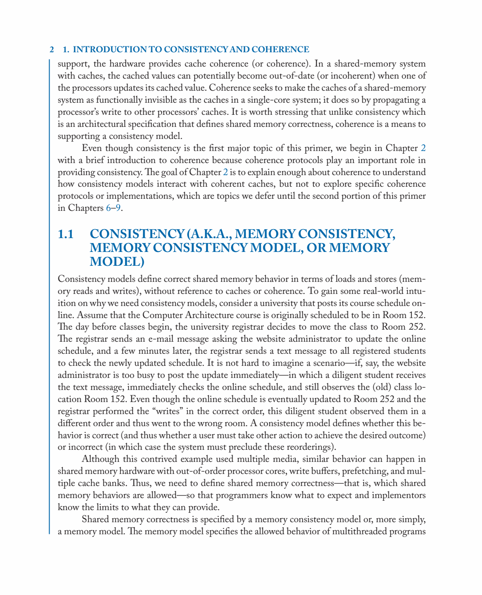
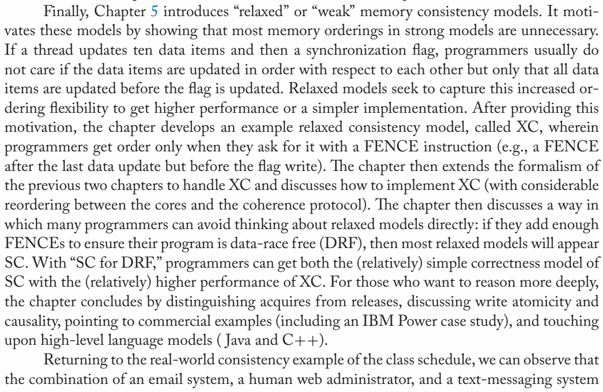
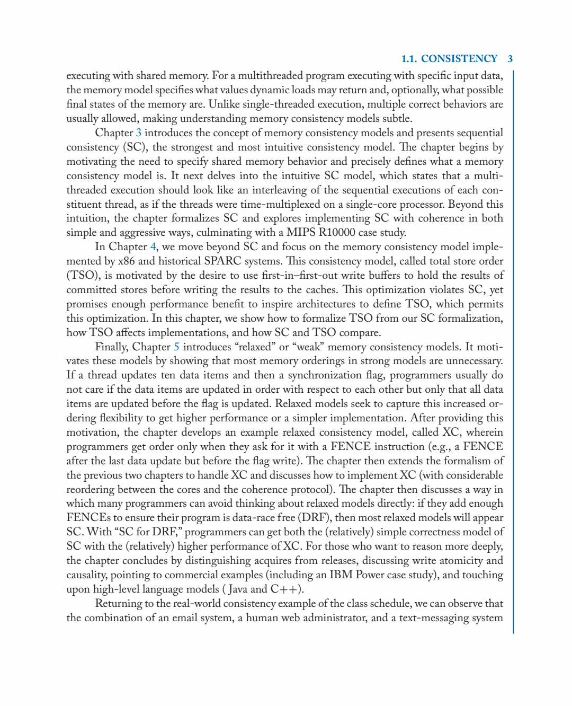
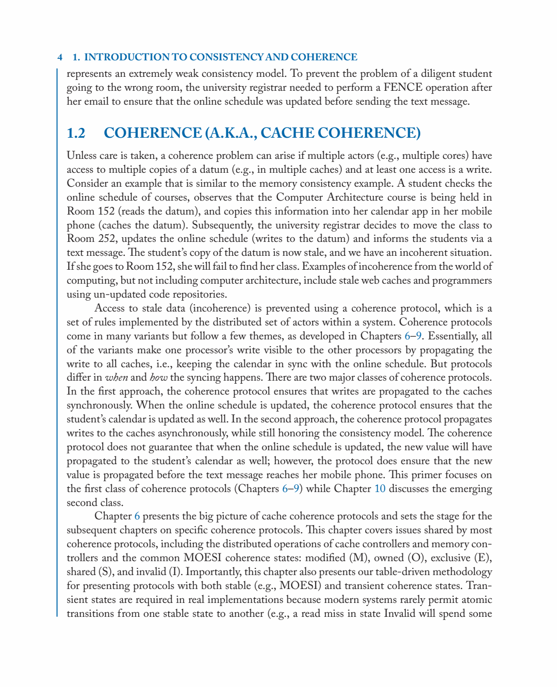
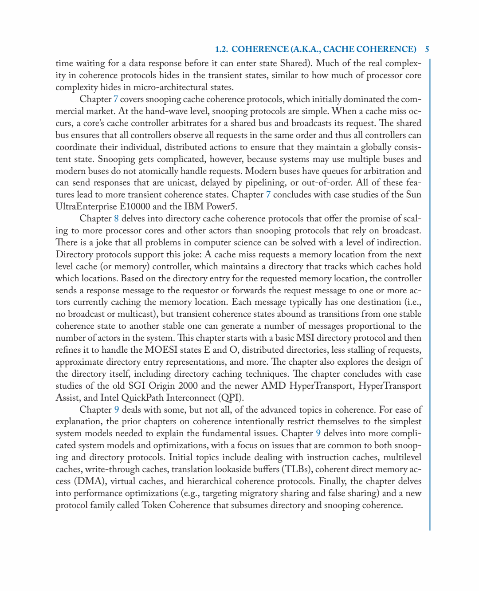
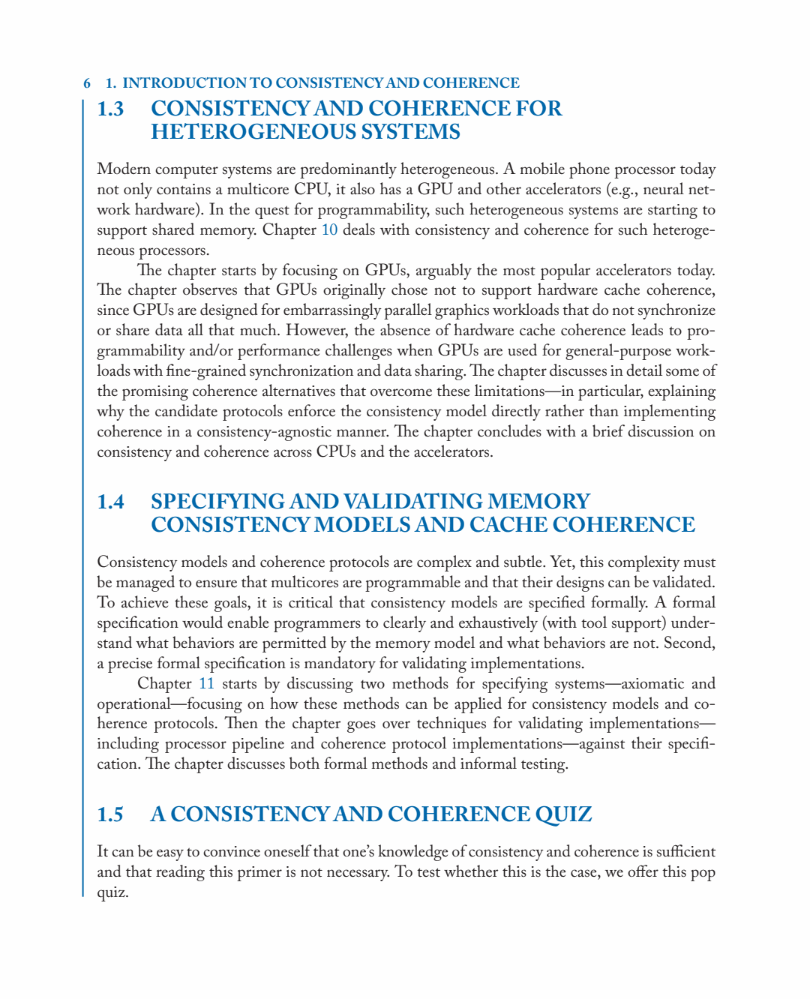
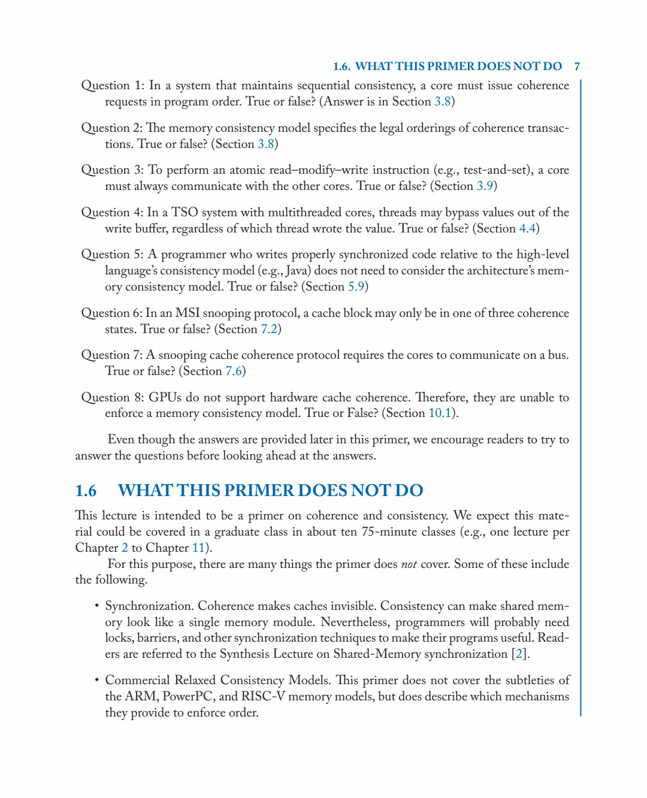
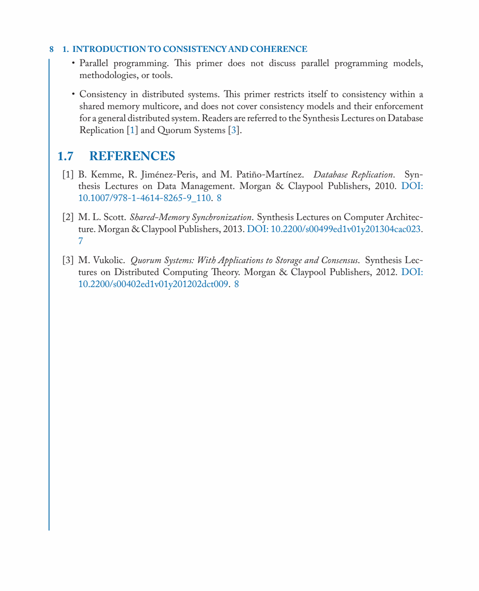

CHAPTER 01 / 中英对照
内存一致性与缓存一致性导论
Introduction to Consistency and Coherence
本章目录
1.1 内存一致性（也称内存一致性模型或内存模型）1.2 缓存一致性1.3 异构系统的内存一致性与缓存一致性1.4 内存一致性模型与缓存一致性的规范及验证1.5 内存一致性与缓存一致性小测验1.6 本书不涵盖的内容1.7 参考文献原书第 1 页PDF 23
ENGLISHMany modern computer systems and most multicore chips (chip multiprocessors) support shared memory in hardware. In a shared memory system, each of the processor cores may read and write to a single shared address space. These designs seek various goodness properties, such as high performance, low power, and low cost. Of course, it is not valuable to provide these goodness properties without first providing correctness. Correct shared memory seems intuitive at a hand-wave level, but, as this lecture will help show, there are subtle issues in even defining what it means for a shared memory system to be correct, as well as many subtle corner cases in designing a correct shared memory implementation. Moreover, these subtleties must be mastered in hardware implementations where bug fixes are expensive. Even academics should master these subtleties to make it more likely that their proposed designs will work.
中文许多现代计算机系统和大多数多核芯片（片上多处理器）都在硬件中支持共享内存。在共享内存系统中，每个处理器核都可以读写同一个共享地址空间。这些设计追求高性能、低功耗、低成本等优良特性。当然，如果不能首先保证正确性，这些特性就没有价值。从概念上看，正确的共享内存似乎很直观，但本书将表明：即使只是定义共享内存系统的正确性，也存在微妙之处；设计正确的共享内存实现时，还会遇到许多细微的边界情况。此外，硬件中的缺陷修复代价高昂，因此实现者必须掌握这些细节。即便是学术研究人员，也应充分理解它们，才能提高所提设计实际可行的可能性。
ENGLISHDesigning and evaluating a correct shared memory system requires an architect to understand memory consistency and cache coherence, the two topics of this primer. Memory consistency (consistency, memory consistency model, or memory model) is a precise, architecturally visible definition of shared memory correctness. Consistency definitions provide rules about loads and stores (or memory reads and writes) and how they act upon memory. Ideally, consistency definitions would be simple and easy to understand. However, defining what it means for shared memory to behave correctly is more subtle than defining the correct behavior of, for example, a single-threaded processor core. The correctness criterion for a single processor core partitions behavior between one correct result and many incorrect alternatives. This is because the processor’s architecture mandates that the execution of a thread transforms a given input state into a single well-defined output state, even on an out-of-order core. Shared memory consistency models, however, concern the loads and stores of multiple threads and usually allow many correct executions while disallowing many (more) incorrect ones. The possibility of multiple correct executions is due to the ISA allowing multiple threads to execute concurrently, often with many possible legal interleavings of instructions from different threads. The multitude of correct executions complicates the erstwhile simple challenge of determining whether an execution is correct. Nevertheless, consistency must be mastered to implement shared memory and, in some cases, to write correct programs that use it.
中文设计和评估正确的共享内存系统，要求体系结构设计者理解本书的两大主题：内存一致性与缓存一致性。内存一致性（也简称一致性，或称内存一致性模型、内存模型）是对共享内存正确性的精确定义，并且在体系结构层面对软件可见。内存一致性定义给出了加载和存储（即内存读写）操作及其作用于内存的规则。理想情况下，这些定义应当简单易懂。然而，定义共享内存的正确行为，比定义单线程处理器核等系统的正确行为更为微妙。单处理器核的正确性标准将所有行为划分为一种正确结果和许多错误结果。这是因为处理器体系结构规定，线程执行必须把给定的输入状态转换为唯一且明确定义的输出状态，即使处理器核采用乱序执行也是如此。相比之下，共享内存一致性模型涉及多个线程的加载和存储，通常既允许多种正确执行，也禁止许多（数量更多的）错误执行。之所以可能存在多种正确执行，是因为指令集体系结构（ISA）允许多个线程并发执行，而不同线程的指令通常可以形成多种合法的交错顺序。正确执行的多样性，使原本看似简单的执行正确性判定变得复杂。然而，要实现共享内存，乃至在某些情况下编写正确使用共享内存的程序，都必须掌握内存一致性。
ENGLISHThe microarchitecture—the hardware design of the processor cores and the shared memory system—must enforce the desired consistency model. As part of this consistency model
中文微体系结构，也就是处理器核与共享内存系统的硬件设计，必须保证所需的内存一致性模型。作为支持该一致性模型的一部分，
查看 原书第 1 页 的完整原版面（PDF 23）
原书第 2 页PDF 24
ENGLISHsupport, the hardware provides cache coherence (or coherence). In a shared-memory system with caches, the cached values can potentially become out-of-date (or incoherent) when one of the processors updates its cached value. Coherence seeks to make the caches of a shared-memory system as functionally invisible as the caches in a single-core system; it does so by propagating a processor’s write to other processors’ caches. It is worth stressing that unlike consistency which is an architectural specification that defines shared memory correctness, coherence is a means to supporting a consistency model.
中文硬件提供缓存一致性。在带缓存的共享内存系统中，当某个处理器更新其缓存中的值时，其他缓存中的值可能变得过时，即出现缓存不一致。缓存一致性的目标，是使共享内存系统中的缓存在功能上像单核系统的缓存一样，对软件不可见；它通过将某个处理器的写操作传播到其他处理器的缓存来实现这一点。需要强调的是，内存一致性是定义共享内存正确性的体系结构规范，而缓存一致性则是支持内存一致性模型的一种手段。
ENGLISHEven though consistency is the first major topic of this primer, we begin in Chapter 2 with a brief introduction to coherence because coherence protocols play an important role in providing consistency. The goal of Chapter 2 is to explain enough about coherence to understand how consistency models interact with coherent caches, but not to explore specific coherence protocols or implementations, which are topics we defer until the second portion of this primer in Chapters 6–9.
中文尽管内存一致性是本书的第一个主要主题，我们仍先在第2章简要介绍缓存一致性，因为缓存一致性协议在实现内存一致性方面发挥着重要作用。第2章旨在介绍足够的缓存一致性知识，使读者能够理解内存一致性模型如何与一致性缓存交互；具体的缓存一致性协议及其实现，则留待本书第二部分的第6—9章讨论。
ENGLISH1.1 CONSISTENCY (A.K.A., MEMORY CONSISTENCY, MEMORY CONSISTENCY MODEL, OR MEMORY MODEL)
中文1.1 内存一致性（也称内存一致性模型或内存模型）
ENGLISHConsistency models define correct shared memory behavior in terms of loads and stores (memory reads and writes), without reference to caches or coherence. To gain some real-world intuition on why we need consistency models, consider a university that posts its course schedule online. Assume that the Computer Architecture course is originally scheduled to be in Room 152. The day before classes begin, the university registrar decides to move the class to Room 252. The registrar sends an e-mail message asking the website administrator to update the online schedule, and a few minutes later, the registrar sends a text message to all registered students to check the newly updated schedule. It is not hard to imagine a scenario—if, say, the website administrator is too busy to post the update immediately—in which a diligent student receives the text message, immediately checks the online schedule, and still observes the (old) class location Room 152. Even though the online schedule is eventually updated to Room 252 and the registrar performed the “writes” in the correct order, this diligent student observed them in a different order and thus went to the wrong room. A consistency model defines whether this behavior is correct (and thus whether a user must take other action to achieve the desired outcome) or incorrect (in which case the system must preclude these reorderings).
中文内存一致性模型使用加载和存储（内存读写）来定义正确的共享内存行为，而不涉及缓存或缓存一致性。为直观理解现实中为何需要一致性模型，考虑一所在线发布课程表的大学。假设“计算机体系结构”课程最初安排在152教室。开课前一天，教务管理人员决定将上课地点改为252教室。她发送电子邮件，请网站管理员更新在线课表，几分钟后又向所有选课学生发送短信，要求他们查看刚刚更新的课表。不难设想这样一种情况：例如，网站管理员太忙，未能立即发布更新；一名认真负责的学生收到短信后马上查看在线课表，却仍看到原来的上课地点152教室。尽管课表最终会更新为252教室，而且教务管理人员也按正确顺序执行了这些“写操作”，这名学生观察到的顺序却不同，因此走错了教室。一致性模型规定，这种行为究竟是正确的（因此用户必须采取其他措施才能获得所需结果），还是错误的（因此系统必须阻止这种重排序）。
ENGLISHAlthough this contrived example used multiple media, similar behavior can happen in shared memory hardware with out-of-order processor cores, write buffers, prefetching, and multiple cache banks. Thus, we need to define shared memory correctness—that is, which shared memory behaviors are allowed—so that programmers know what to expect and implementors know the limits to what they can provide.
中文这个人为构造的例子使用了多种通信媒介，但在具有乱序处理器核、写缓冲区、预取和多个缓存存储体的共享内存硬件中，也会出现类似行为。因此，我们需要定义共享内存的正确性，也就是允许哪些共享内存行为，使程序员知道可以期待什么，使实现者知道实现的约束边界。
ENGLISHShared memory correctness is specified by a memory consistency model or, more simply, a memory model. The memory model specifies the allowed behavior of multithreaded programs
中文共享内存的正确性由内存一致性模型规定，也可以简称为内存模型。内存模型规定了使用共享内存执行的多线程程序
查看 原书第 2 页 的完整原版面（PDF 24）

原书第 3 页PDF 25
ENGLISHexecuting with shared memory. For a multithreaded program executing with specific input data, the memory model specifies what values dynamic loads may return and, optionally, what possible final states of the memory are. Unlike single-threaded execution, multiple correct behaviors are usually allowed, making understanding memory consistency models subtle.
中文可以表现出的行为。对于使用特定输入数据执行的多线程程序，内存模型规定动态加载操作可以返回哪些值，还可以规定内存最终可能处于哪些状态。与单线程执行不同，多线程执行通常允许多种正确行为，这使内存一致性模型的理解更为微妙。
ENGLISHChapter 3 introduces the concept of memory consistency models and presents sequential consistency (SC), the strongest and most intuitive consistency model. The chapter begins by motivating the need to specify shared memory behavior and precisely defines what a memory consistency model is. It next delves into the intuitive SC model, which states that a multithreaded execution should look like an interleaving of the sequential executions of each constituent thread, as if the threads were time-multiplexed on a single-core processor. Beyond this intuition, the chapter formalizes SC and explores implementing SC with coherence in both simple and aggressive ways, culminating with a MIPS R10000 case study.
中文第3章介绍内存一致性模型的概念，并给出最强且最直观的模型——顺序一致性（SC）。该章首先说明为何需要规定共享内存行为，并精确定义内存一致性模型。随后深入讨论直观的SC模型：多线程执行应当表现为各线程顺序执行的某种交错，仿佛这些线程在单核处理器上按时间复用方式执行。在此直观理解基础上，该章对SC进行形式化，并探讨如何借助缓存一致性，以简单或更激进的方式实现SC，最后通过MIPS R10000的案例进行说明。
ENGLISHIn Chapter 4, we move beyond SC and focus on the memory consistency model implemented by x86 and historical SPARC systems. This consistency model, called total store order (TSO), is motivated by the desire to use first-in–first-out write buffers to hold the results of committed stores before writing the results to the caches. This optimization violates SC, yet promises enough performance benefit to inspire architectures to define TSO, which permits this optimization. In this chapter, we show how to formalize TSO from our SC formalization, how TSO affects implementations, and how SC and TSO compare.
中文第4章进一步讨论SC之外的模型，重点关注x86和早期SPARC系统实现的内存一致性模型。该模型称为全存储顺序（TSO），其动机是使用先进先出写缓冲区，在将已提交存储操作的结果写入缓存之前，先暂存这些结果。这种优化违反SC，但预期的性能收益足以促使体系结构定义允许该优化的TSO模型。本章说明如何从SC的形式化定义推导TSO，TSO如何影响实现，并比较SC与TSO。
ENGLISHFinally, Chapter 5 introduces “relaxed” or “weak” memory consistency models. It motivates these models by showing that most memory orderings in strong models are unnecessary. If a thread updates ten data items and then a synchronization flag, programmers usually do not care if the data items are updated in order with respect to each other but only that all data items are updated before the flag is updated. Relaxed models seek to capture this increased ordering flexibility to get higher performance or a simpler implementation. After providing this motivation, the chapter develops an example relaxed consistency model, called XC, wherein programmers get order only when they ask for it with a FENCE instruction (e.g., a FENCE after the last data update but before the flag write). The chapter then extends the formalism of the previous two chapters to handle XC and discusses how to implement XC (with considerable reordering between the cores and the coherence protocol). The chapter then discusses a way in which many programmers can avoid thinking about relaxed models directly: if they add enough FENCEs to ensure their program is data-race free (DRF), then most relaxed models will appear SC. With “SC for DRF,” programmers can get both the (relatively) simple correctness model of SC with the (relatively) higher performance of XC. For those who want to reason more deeply, the chapter concludes by distinguishing acquires from releases, discussing write atomicity and causality, pointing to commercial examples (including an IBM Power case study), and touching upon high-level language models ( Java and C ). CC Returning to the real-world consistency example of the class schedule, we can observe that the combination of an email system, a human web administrator, and a text-messaging system


数学符号与上下标以此原版面为准中文最后，第5章介绍“宽松”或“弱”内存一致性模型。它首先指出，强模型中的大多数内存顺序约束并非必需，以此说明这些模型的动机。如果一个线程先更新十个数据项，再更新一个同步标志，程序员通常并不关心这些数据项彼此之间的更新顺序，只关心所有数据项都在标志更新之前完成更新。宽松模型试图利用这种更大的顺序自由度，以获得更高性能或更简单的实现。说明这一动机后，本章构造了一个名为XC的宽松一致性模型示例：只有程序员通过FENCE指令显式提出要求时，系统才提供顺序保证，例如在最后一个数据更新之后、标志写入之前插入FENCE。本章随后扩展前两章的形式化框架，以描述XC，并讨论XC的实现方式，其中处理器核与缓存一致性协议之间允许大量重排序。接着，本章介绍一种让许多程序员不必直接思考宽松模型的方法：加入足够的FENCE，确保程序无数据竞争（DRF），则大多数宽松模型都会表现为SC。借助“DRF程序具有SC语义”，程序员可以同时获得SC相对简单的正确性模型和XC相对较高的性能。对于希望深入推理的读者，本章最后区分获取与释放操作，讨论写原子性与因果性，介绍商业实例（包括IBM Power案例），并简要涉及高级语言模型（Java与C++）。回到课程表这一现实中的一致性例子，我们可以看到，电子邮件系统、人工网站管理员与短信系统的组合，
查看 原书第 3 页 的完整原版面（PDF 25）

原书第 4 页PDF 26
ENGLISHrepresents an extremely weak consistency model. To prevent the problem of a diligent student going to the wrong room, the university registrar needed to perform a FENCE operation after her email to ensure that the online schedule was updated before sending the text message.
中文构成了一种极弱的一致性模型。要避免那名认真负责的学生走错教室，教务管理人员需要在发出电子邮件后执行一次FENCE操作，确保在线课表已经更新，再发送短信。
ENGLISH1.2 COHERENCE (A.K.A., CACHE COHERENCE)
中文1.2 缓存一致性
ENGLISHUnless care is taken, a coherence problem can arise if multiple actors (e.g., multiple cores) have access to multiple copies of a datum (e.g., in multiple caches) and at least one access is a write. Consider an example that is similar to the memory consistency example. A student checks the online schedule of courses, observes that the Computer Architecture course is being held in Room 152 (reads the datum), and copies this information into her calendar app in her mobile phone (caches the datum). Subsequently, the university registrar decides to move the class to Room 252, updates the online schedule (writes to the datum) and informs the students via a text message. The student’s copy of the datum is now stale, and we have an incoherent situation. If she goes to Room 152, she will fail to find her class. Examples of incoherence from the world of computing, but not including computer architecture, include stale web caches and programmers using un-updated code repositories.
中文如果多个参与者（例如多个处理器核）能够访问同一数据的多个副本（例如位于多个缓存中），且至少有一次访问是写操作，那么稍有不慎就可能产生缓存一致性问题。考虑一个与前述内存一致性例子类似的场景。一名学生查看在线课表，发现“计算机体系结构”课程在152教室上课（读取数据），并将这一信息复制到手机日历应用中（缓存数据）。随后，教务管理人员决定将课程改到252教室，更新在线课表（写入数据），并通过短信通知学生。此时，这名学生持有的数据副本已经过时，出现了不一致。如果她前往152教室，就找不到自己的课堂。计算领域中不涉及计算机体系结构的类似例子，还包括过时的Web缓存和程序员使用未更新的代码仓库。
ENGLISHAccess to stale data (incoherence) is prevented using a coherence protocol, which is a set of rules implemented by the distributed set of actors within a system. Coherence protocols come in many variants but follow a few themes, as developed in Chapters 6–9. Essentially, all of the variants make one processor’s write visible to the other processors by propagating the write to all caches, i.e., keeping the calendar in sync with the online schedule. But protocols differ in when and how the syncing happens. There are two major classes of coherence protocols. In the first approach, the coherence protocol ensures that writes are propagated to the caches synchronously. When the online schedule is updated, the coherence protocol ensures that the student’s calendar is updated as well. In the second approach, the coherence protocol propagates writes to the caches asynchronously, while still honoring the consistency model. The coherence protocol does not guarantee that when the online schedule is updated, the new value will have propagated to the student’s calendar as well; however, the protocol does ensure that the new value is propagated before the text message reaches her mobile phone. This primer focuses on the first class of coherence protocols (Chapters 6–9) while Chapter 10 discusses the emerging second class.
中文系统通过缓存一致性协议来防止访问过时数据（即缓存不一致）。该协议是一组由系统内分布式参与者共同实现的规则。缓存一致性协议有许多变体，但都围绕若干共同思路展开，第6—9章将对此详述。实质上，所有这些变体都会将一个处理器的写操作传播到各个缓存，使其对其他处理器可见，也就是使手机日历与在线课表保持同步。不过，不同协议在同步发生的时间和方式上有所区别。缓存一致性协议主要分为两类。第一类保证写操作同步传播至缓存：在线课表更新时，协议确保学生的日历也已经更新。第二类以异步方式将写操作传播到缓存，同时仍遵守内存一致性模型。它不保证在线课表更新时，新值也已经传播到学生的日历；但它保证，在短信到达学生手机之前，新值已经完成传播。本书重点介绍第一类协议（第6—9章），第10章则讨论正在兴起的第二类协议。
ENGLISHChapter 6 presents the big picture of cache coherence protocols and sets the stage for the subsequent chapters on specific coherence protocols. This chapter covers issues shared by most coherence protocols, including the distributed operations of cache controllers and memory controllers and the common MOESI coherence states: modified (M), owned (O), exclusive (E), shared (S), and invalid (I). Importantly, this chapter also presents our table-driven methodology for presenting protocols with both stable (e.g., MOESI) and transient coherence states. Transient states are required in real implementations because modern systems rarely permit atomic transitions from one stable state to another (e.g., a read miss in state Invalid will spend some
中文第6章概述缓存一致性协议，为后续讨论具体协议奠定基础。本章介绍大多数协议共同涉及的问题，包括缓存控制器和内存控制器的分布式操作，以及常见的MOESI缓存一致性状态：已修改（M）、拥有（O）、独占（E）、共享（S）和无效（I）。此外，本章还介绍用表格描述协议的方法，该方法同时涵盖稳定状态（例如MOESI）和瞬态状态。实际实现必须包含瞬态状态，因为现代系统很少允许从一种稳定状态原子地转换到另一种稳定状态。例如，在无效状态下发生读缺失时，必须先等待一段时间取得数据响应，
查看 原书第 4 页 的完整原版面（PDF 26）

原书第 5 页PDF 27
ENGLISHtime waiting for a data response before it can enter state Shared). Much of the real complexity in coherence protocols hides in the transient states, similar to how much of processor core complexity hides in micro-architectural states.
中文随后才能进入共享状态。缓存一致性协议的实际复杂性，很大一部分隐藏在瞬态状态中；这类似于处理器核的大量复杂性隐藏在微体系结构状态之中。
ENGLISHChapter 7 covers snooping cache coherence protocols, which initially dominated the commercial market. At the hand-wave level, snooping protocols are simple. When a cache miss occurs, a core’s cache controller arbitrates for a shared bus and broadcasts its request. The shared bus ensures that all controllers observe all requests in the same order and thus all controllers can coordinate their individual, distributed actions to ensure that they maintain a globally consistent state. Snooping gets complicated, however, because systems may use multiple buses and modern buses do not atomically handle requests. Modern buses have queues for arbitration and can send responses that are unicast, delayed by pipelining, or out-of-order. All of these features lead to more transient coherence states. Chapter 7 concludes with case studies of the Sun UltraEnterprise E10000 and the IBM Power5.
中文第7章介绍最初主导商业市场的监听式缓存一致性协议。从概念上看，监听协议很简单：发生缓存缺失时，处理器核的缓存控制器参与共享总线仲裁，并广播请求。共享总线确保所有控制器以相同顺序观察到全部请求，因此各控制器能够协调自身的分布式操作，保持全局状态一致。然而，实际系统可能使用多条总线，而且现代总线不会原子地处理请求，因此监听协议会变得复杂。现代总线具有仲裁队列，并且可以发送单播响应、因流水线而延迟的响应，或乱序响应。这些特性都会带来更多瞬态缓存一致性状态。第7章最后分析Sun UltraEnterprise E10000和IBM Power5两个案例。
ENGLISHChapter 8 delves into directory cache coherence protocols that offer the promise of scaling to more processor cores and other actors than snooping protocols that rely on broadcast. There is a joke that all problems in computer science can be solved with a level of indirection. Directory protocols support this joke: A cache miss requests a memory location from the next level cache (or memory) controller, which maintains a directory that tracks which caches hold which locations. Based on the directory entry for the requested memory location, the controller sends a response message to the requestor or forwards the request message to one or more actors currently caching the memory location. Each message typically has one destination (i.e., no broadcast or multicast), but transient coherence states abound as transitions from one stable coherence state to another stable one can generate a number of messages proportional to the number of actors in the system. This chapter starts with a basic MSI directory protocol and then refines it to handle the MOESI states E and O, distributed directories, less stalling of requests, approximate directory entry representations, and more. The chapter also explores the design of the directory itself, including directory caching techniques. The chapter concludes with case studies of the old SGI Origin 2000 and the newer AMD HyperTransport, HyperTransport Assist, and Intel QuickPath Interconnect (QPI).
中文第8章深入讨论目录式缓存一致性协议。与依赖广播的监听协议相比，目录协议有望扩展到更多处理器核及其他参与者。计算机科学中有句玩笑话：所有问题都可以通过增加一层间接性来解决。目录协议恰好印证了这一说法：发生缓存缺失时，请求发送至下一级缓存（或内存）控制器；控制器维护一个目录，记录哪些缓存持有哪些内存位置。根据目标内存位置对应的目录项，控制器向请求者发送响应，或者将请求转发给当前缓存该内存位置的一个或多个参与者。每条消息通常只有一个目的地，即不使用广播或多播；然而，瞬态状态仍然很多，因为从一种稳定缓存一致性状态转换到另一种稳定状态时，可能产生数量与系统参与者数量成正比的消息。本章从基本的MSI目录协议入手，逐步扩展到MOESI中的E与O状态、分布式目录、减少请求停顿、近似目录项表示等内容。本章还讨论目录自身的设计，包括目录缓存技术，最后分析较早的SGI Origin 2000，以及较新的AMD HyperTransport、HyperTransport Assist和Intel QuickPath Interconnect（QPI）。
ENGLISHChapter 9 deals with some, but not all, of the advanced topics in coherence. For ease of explanation, the prior chapters on coherence intentionally restrict themselves to the simplest system models needed to explain the fundamental issues. Chapter 9 delves into more complicated system models and optimizations, with a focus on issues that are common to both snooping and directory protocols. Initial topics include dealing with instruction caches, multilevel caches, write-through caches, translation lookaside buffers (TLBs), coherent direct memory access (DMA), virtual caches, and hierarchical coherence protocols. Finally, the chapter delves into performance optimizations (e.g., targeting migratory sharing and false sharing) and a new protocol family called Token Coherence that subsumes directory and snooping coherence.
中文第9章讨论缓存一致性的部分高级主题。为便于解释，前面各章有意采用能够说明基本问题的最简单系统模型。第9章进一步讨论更复杂的系统模型与优化，重点关注监听协议和目录协议共同面临的问题。首先涉及指令缓存、多级缓存、直写缓存、地址转换后备缓冲器（TLB）、支持缓存一致性的直接内存访问（DMA）、虚拟缓存以及分层缓存一致性协议。最后，本章深入讨论性能优化，例如针对迁移式共享和伪共享的优化，并介绍一种称为令牌一致性（Token Coherence）的新协议族，它能够统一涵盖目录式与监听式缓存一致性。
查看 原书第 5 页 的完整原版面（PDF 27）

原书第 6 页PDF 28
ENGLISH1.3 CONSISTENCY AND COHERENCE FOR HETEROGENEOUS SYSTEMS
中文1.3 异构系统的内存一致性与缓存一致性
ENGLISHModern computer systems are predominantly heterogeneous. A mobile phone processor today not only contains a multicore CPU, it also has a GPU and other accelerators (e.g., neural network hardware). In the quest for programmability, such heterogeneous systems are starting to support shared memory. Chapter 10 deals with consistency and coherence for such heterogeneous processors.
中文现代计算机系统以异构设计为主。如今的手机处理器不仅包含多核CPU，还包含GPU和其他加速器，例如神经网络硬件。为改善可编程性，这类异构系统正开始支持共享内存。第10章讨论此类异构处理器的内存一致性与缓存一致性。
ENGLISHThe chapter starts by focusing on GPUs, arguably the most popular accelerators today. The chapter observes that GPUs originally chose not to support hardware cache coherence, since GPUs are designed for embarrassingly parallel graphics workloads that do not synchronize or share data all that much. However, the absence of hardware cache coherence leads to programmability and/or performance challenges when GPUs are used for general-purpose workloads with fine-grained synchronization and data sharing. The chapter discusses in detail some of the promising coherence alternatives that overcome these limitations—in particular, explaining why the candidate protocols enforce the consistency model directly rather than implementing coherence in a consistency-agnostic manner. The chapter concludes with a brief discussion on consistency and coherence across CPUs and the accelerators.
中文本章首先聚焦于当今最普及的加速器之一——GPU。GPU最初选择不在硬件中支持缓存一致性，因为它面向高度可并行的图形工作负载，这类负载通常很少进行同步或共享数据。然而，当GPU用于具有细粒度同步和数据共享的通用工作负载时，缺少硬件缓存一致性就会带来可编程性和／或性能方面的挑战。本章详细讨论若干有望克服这些限制的缓存一致性方案，尤其说明这些候选协议为何直接保证内存一致性模型，而不是采用与内存一致性模型无关的方式实现缓存一致性。最后，本章简要讨论CPU与加速器之间的内存一致性和缓存一致性。
ENGLISH1.4 SPECIFYING AND VALIDATING MEMORY CONSISTENCY MODELS AND CACHE COHERENCE
中文1.4 内存一致性模型与缓存一致性的规范及验证
ENGLISHConsistency models and coherence protocols are complex and subtle. Yet, this complexity must be managed to ensure that multicores are programmable and that their designs can be validated. To achieve these goals, it is critical that consistency models are specified formally. A formal specification would enable programmers to clearly and exhaustively (with tool support) understand what behaviors are permitted by the memory model and what behaviors are not. Second, a precise formal specification is mandatory for validating implementations.
中文内存一致性模型和缓存一致性协议既复杂又微妙。然而，要确保多核系统易于编程，并且其设计能够得到验证，就必须控制这种复杂性。为实现这些目标，形式化规定内存一致性模型至关重要。形式化规范使程序员能够在工具支持下，清晰而穷尽地理解内存模型允许哪些行为、禁止哪些行为。其次，精确的形式化规范是验证实现的必要条件。
ENGLISHChapter 11 starts by discussing two methods for specifying systems—axiomatic and operational—focusing on how these methods can be applied for consistency models and coherence protocols. Then the chapter goes over techniques for validating implementations— including processor pipeline and coherence protocol implementations—against their specification. The chapter discusses both formal methods and informal testing.
中文第11章首先讨论两种系统规范方法：公理化方法和操作性方法，重点说明如何将它们应用于内存一致性模型与缓存一致性协议。随后介绍如何依据规范验证实现，包括处理器流水线和缓存一致性协议的实现。本章同时讨论形式化方法与非形式化测试。
ENGLISH1.5 A CONSISTENCY AND COHERENCE QUIZ
中文1.5 内存一致性与缓存一致性小测验
ENGLISHIt can be easy to convince oneself that one’s knowledge of consistency and coherence is sufficient and that reading this primer is not necessary. To test whether this is the case, we offer this pop quiz.
中文人们很容易认为自己已经充分掌握内存一致性与缓存一致性，无需再阅读本书。为检验是否确实如此，我们给出以下小测验。
查看 原书第 6 页 的完整原版面（PDF 28）

原书第 7 页PDF 29
ENGLISHQuestion 1: In a system that maintains sequential consistency, a core must issue coherence requests in program order. True or false? (Answer is in Section 3.8)
中文问题1：在维持顺序一致性的系统中，处理器核必须按程序顺序发出缓存一致性请求。对还是错？（答案见3.8节）
ENGLISHQuestion 2: The memory consistency model specifies the legal orderings of coherence transactions. True or false? (Section 3.8)
中文问题2：内存一致性模型规定缓存一致性事务的合法顺序。对还是错？（见3.8节）
ENGLISHQuestion 3: To perform an atomic read–modify–write instruction (e.g., test-and-set), a core must always communicate with the other cores. True or false? (Section 3.9)
中文问题3：执行原子读—改—写指令（例如test-and-set，测试并置位）时，处理器核始终必须与其他核通信。对还是错？（见3.9节）
ENGLISHQuestion 4: In a TSO system with multithreaded cores, threads may bypass values out of the write buffer, regardless of which thread wrote the value. True or false? (Section 4.4)
中文问题4：在具有多线程处理器核的TSO系统中，无论某个值由哪个线程写入，线程都可以通过旁路从写缓冲区读取该值。对还是错？（见4.4节）
ENGLISHQuestion 5: A programmer who writes properly synchronized code relative to the high-level language’s consistency model (e.g., Java) does not need to consider the architecture’s memory consistency model. True or false? (Section 5.9)
中文问题5：如果程序员依据高级语言（例如Java）的一致性模型编写了正确同步的代码，就不必考虑体系结构的内存一致性模型。对还是错？（见5.9节）
ENGLISHQuestion 6: In an MSI snooping protocol, a cache block may only be in one of three coherence states. True or false? (Section 7.2)
中文问题6：在MSI监听协议中，一个缓存块只能处于三种缓存一致性状态之一。对还是错？（见7.2节）
ENGLISHQuestion 7: A snooping cache coherence protocol requires the cores to communicate on a bus. True or false? (Section 7.6)
中文问题7：监听式缓存一致性协议要求处理器核通过总线通信。对还是错？（见7.6节）
ENGLISHQuestion 8: GPUs do not support hardware cache coherence. Therefore, they are unable to enforce a memory consistency model. True or False? (Section 10.1).
中文问题8：GPU不支持硬件缓存一致性，因此无法保证内存一致性模型。对还是错？（见10.1节）
ENGLISHEven though the answers are provided later in this primer, we encourage readers to try to answer the questions before looking ahead at the answers.
中文虽然本书后文会给出答案，我们仍鼓励读者先尝试回答，再翻阅答案。
ENGLISH1.6 WHAT THIS PRIMER DOES NOT DO
中文1.6 本书不涵盖的内容
ENGLISHThis lecture is intended to be a primer on coherence and consistency. We expect this material could be covered in a graduate class in about ten 75-minute classes (e.g., one lecture per Chapter 2 to Chapter 11). For this purpose, there are many things the primer does not cover. Some of these include the following.
中文本书旨在作为缓存一致性与内存一致性的入门读物。我们预计，这些内容可在研究生课程中用约十次、每次75分钟的课讲授，例如第2章至第11章每章安排一次课。为实现这一定位，本书不涵盖许多相关内容，其中包括以下方面。
ENGLISH• Synchronization. Coherence makes caches invisible. Consistency can make shared memory look like a single memory module. Nevertheless, programmers will probably need locks, barriers, and other synchronization techniques to make their programs useful. Readers are referred to the Synthesis Lecture on Shared-Memory synchronization [2].
中文• 同步。缓存一致性使缓存对软件不可见，内存一致性可以使共享内存表现为单一内存模块。不过，要让程序完成有用的工作，程序员通常仍需要锁、栅障及其他同步技术。相关内容可参阅Synthesis Lectures系列中的《共享内存同步》[2]。
ENGLISH• Commercial Relaxed Consistency Models. This primer does not cover the subtleties of the ARM, PowerPC, and RISC-V memory models, but does describe which mechanisms they provide to enforce order.
中文• 商业宽松一致性模型。本书不详细讨论ARM、PowerPC和RISC-V内存模型的各种微妙细节，但会说明它们提供了哪些用于保证顺序的机制。
查看 原书第 7 页 的完整原版面（PDF 29）

原书第 8 页PDF 30
ENGLISH• Parallel programming. This primer does not discuss parallel programming models, methodologies, or tools.
中文• 并行编程。本书不讨论并行编程模型、方法或工具。
ENGLISH• Consistency in distributed systems. This primer restricts itself to consistency within a shared memory multicore, and does not cover consistency models and their enforcement for a general distributed system. Readers are referred to the Synthesis Lectures on Database Replication [1] and Quorum Systems [3].
中文• 分布式系统的一致性。本书仅讨论共享内存多核系统内部的一致性，不涉及一般分布式系统的一致性模型及其实现机制。相关内容可参阅Synthesis Lectures系列中的《数据库复制》[1]和《法定人数系统》[3]。
ENGLISH1.7 REFERENCES
中文1.7 参考文献
ENGLISH[1] B. Kemme, R. Jiménez-Peris, and M. Patiño-Martínez. Database Replication. Syn-
中文[1] B. Kemme、R. Jiménez-Peris、M. Patiño-Martínez.《数据库复制》。
ENGLISHthesis Lectures on Data Management. Morgan & Claypool Publishers, 2010. DOI: 10.1007/978-1-4614-8265-9_110. 8
中文Synthesis Lectures on Data Management. Morgan & Claypool Publishers, 2010. DOI: 10.1007/978-1-4614-8265-9_110。引用页：8。
ENGLISH[2] M. L. Scott. Shared-Memory Synchronization. Synthesis Lectures on Computer Architec-
中文[2] M. L. Scott.《共享内存同步》。
ENGLISHture. Morgan & Claypool Publishers, 2013. DOI: 10.2200/s00499ed1v01y201304cac023. 7
中文Synthesis Lectures on Computer Architecture. Morgan & Claypool Publishers, 2013. DOI: 10.2200/s00499ed1v01y201304cac023。引用页：7。
ENGLISH[3] M. Vukolic. Quorum Systems: With Applications to Storage and Consensus. Synthesis Lec-
中文[3] M. Vukolic.《法定人数系统：在存储与共识中的应用》。
ENGLISHtures on Distributed Computing Theory. Morgan & Claypool Publishers, 2012. DOI: 10.2200/s00402ed1v01y201202dct009. 8
中文Synthesis Lectures on Distributed Computing Theory. Morgan & Claypool Publishers, 2012. DOI: 10.2200/s00402ed1v01y201202dct009。引用页：8。
查看 原书第 8 页 的完整原版面（PDF 30）
